Metro Extracts
Parts of the OpenStreetMap database
for major world cities and their surrounding areas. The goal of these
extracts is to make it easy to make maps for major world cities, even if
they cross state or national boundaries.
Each city includes:
- Bzip’ed OpenStreetMap XML data in an .osm.bz2 file.
- Compressed OpenStreetMap binary PBF data in an .osm.pbf file.
- Coastline shapefile extracts of the immediate area in a .zip file.
- Point, line and polygon shapefiles from Osm2pgsql in a .zip file.
Provided by Michal Migurski on an expected
monthly basis via extractotron.
Contact me via Github to request new cities,
or add them directly to
cities.txt
with a fork-and-pull-request.
Thanks Nelson Minar for contributing the map browser,
Smart Chicago for EC2 funding, and all
cities.txt contributors.
Updated From Planet Mar 23, 2013
- Africa:
- Abuja
- Bejaia
- Cairo
- Dar-es-Salaam
- Harare
- Johannesburg
- Kampala
- Kigali
- Lagos
- Mogadishu
- Nairobi
- Asia:
- Almaty, Kazakhstan
- Ankara
- Bangkok
- Beijing
- Bengaluru
- Chengdu
- Chennai
- Chongqing
- Dushanbe, Tajikistan
- Hong Kong
- Manila
- Mumbai
- Nazareth
- New Delhi
- Osaka
- Seoul
- Shanghai
- Siem Reap
- Singapore
- Taipei
- Tehran
- Tokyo
- Europe:
- Amsterdam
- Athens
- Barcelona
- Berlin
- Birmingham
- Bordeaux
- Brno
- Brussels
- Budapest
- Colchester
- Copenhagen
- Edinburgh
- Florence
- Frankfurt
- Gdansk
- Genoa
- Glasgow
- Hamburg
- Helsinki
- Istanbul
- Karlsruhe
- Krakow
- Kyiv
- Leeds
- Lille
- Lisbon
- London
- Lyon
- Madrid
- Manchester
- Marseille
- Milan
- Monaco
- Montpellier
- Moscow
- Munich
- Newcastle upon Tyne
- Nuremberg
- Odessa
- Paris
- Porto
- Prague
- Reykjavik
- Rome
- Rotterdam
- Saint Petersburg
- Sarajevo
- Sofia
- Stockholm
- Strasbourg
- Toulouse
- Venice
- Vienna
- Vienna, Bratislava, Győr, Eisenstadt
- Warsaw
- Wroclaw
- Middle East:
- As Suwayda'
- Baghdad
- Damascus
- Dubai, Abu Dhabi
- Kabul
- Riyadh
- Tel Aviv
- North America:
- Atlanta
- Austin
- Boston
- Calgary
- Charlotte
- Chattanooga
- Chicago
- Cincinnati
- Cleveland
- Columbus and Delaware, OH
- Dallas
- Denver and Boulder CO
- Detroit
- Evansville
- Grass Valley, CA
- Honolulu
- Houston
- Humboldt, CA
- Indianapolis
- Kamloops
- Kansas City, Lawrence, Topeka
- Las Vegas
- Lexington
- Los Angeles
- Macon, GA
- Madison
- Mexico City
- Miami
- Milwaukee
- Minneapolis, St. Paul
- Mobile, AL
- Montreal
- New Orleans
- New York City
- Philadelphia
- Phoenix
- Pittsburgh
- Port-au-Prince
- Portland
- Reno
- Sacramento
- San Diego, Tijuana
- San Francisco
- San Francisco Bay Area
- Santa Barbara
- Santo Domingo
- Seattle
- St. Louis
- State College, PA
- Tampa
- Terre Haute
- Toronto
- Tucson
- Vancouver
- Victoria
- Washington D.C., Baltimore
- Oceania:
- Auckland
- Jakarta
- Melbourne
- Sydney
- South America:
- Bogota
- Brasília
- Buenos Aires
- Campo Grande
- Cartagena de Indias
- Curitiba, Brazil
- Lima
- Quito
- Rio de Janeiro
- Santiago
- Sao Paulo
An archived copy of this collection of extracts from the
March 14th 2012 Planet file
(just before the April, 2012
license changeover)
is available at archive.org.
Extracts here will continue to be updated into the future.
-
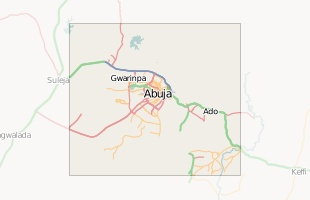
Abuja
-
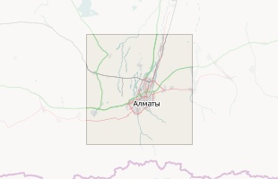
Almaty, Kazakhstan
-
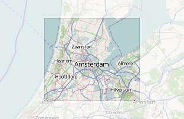
Amsterdam
-
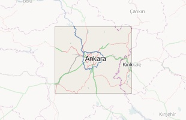
Ankara
-
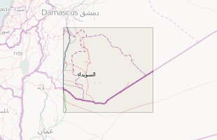
As Suwayda'
-

Athens
-
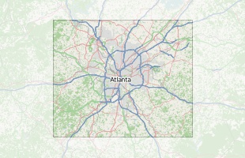
Atlanta
-
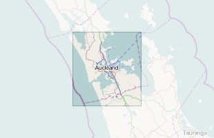
Auckland
-
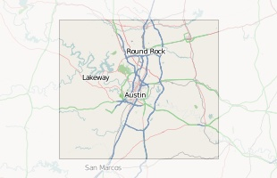
Austin
-
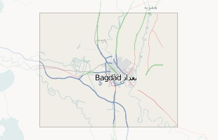
Baghdad
-

Bangkok
-
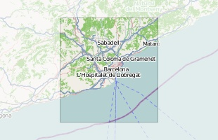
Barcelona
-
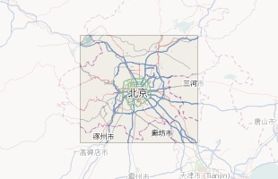
Beijing
-
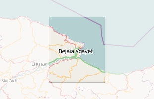
Bejaia
-
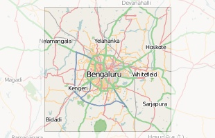
Bengaluru
-
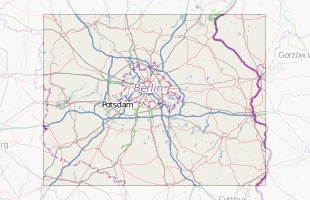
Berlin
-
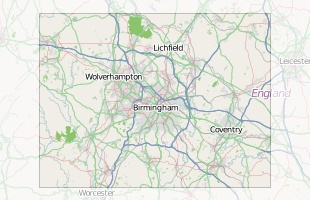
Birmingham
-
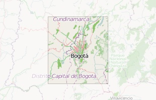
Bogota
-
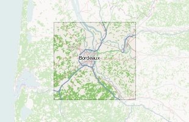
Bordeaux
-
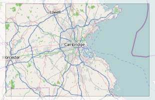
Boston
-
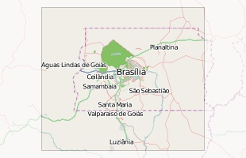
Brasília
-
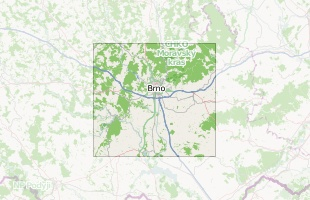
Brno
-
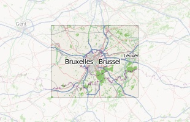
Brussels
-
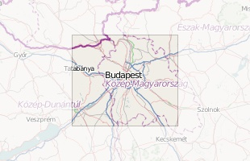
Budapest
-
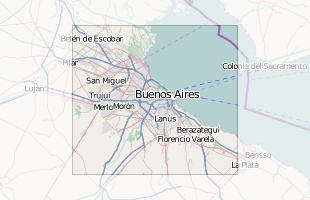
Buenos Aires
-
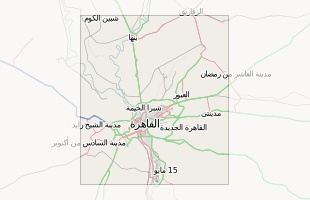
Cairo
-
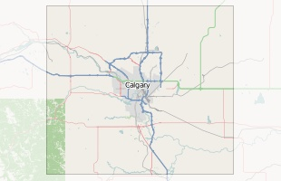
Calgary
-
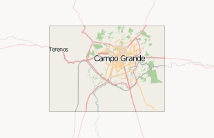
Campo Grande
-
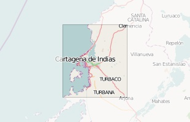
Cartagena de Indias
-
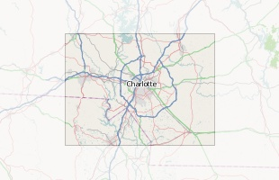
Charlotte
-

Chattanooga
-
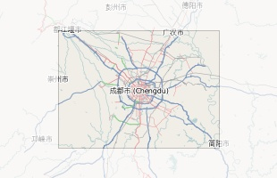
Chengdu
-
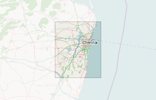
Chennai
-
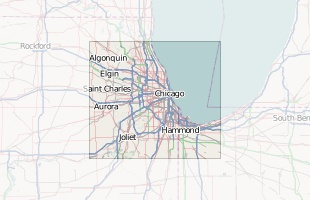
Chicago
-
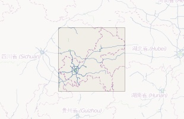
Chongqing
-
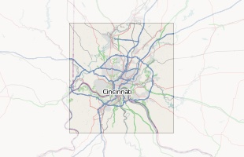
Cincinnati
-
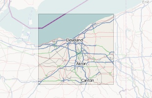
Cleveland
-
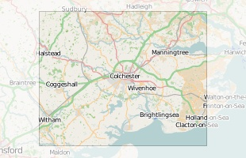
Colchester
-
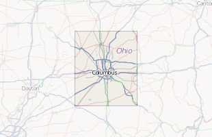
Columbus and Delaware, OH
-
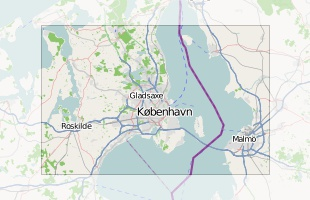
Copenhagen
-
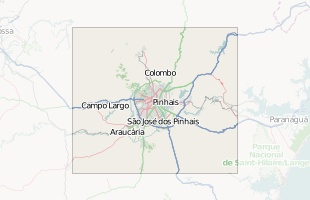
Curitiba, Brazil
-
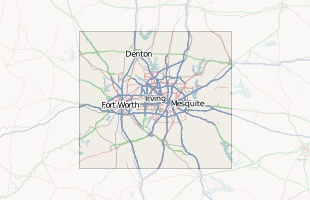
Dallas
-
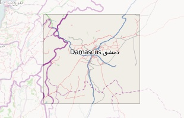
Damascus
-
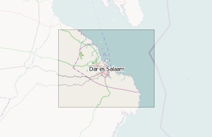
Dar-es-Salaam
-
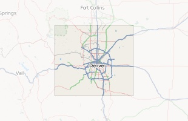
Denver and Boulder CO
-
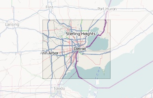
Detroit
-
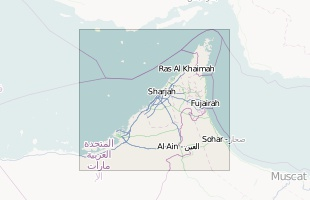
Dubai, Abu Dhabi
-
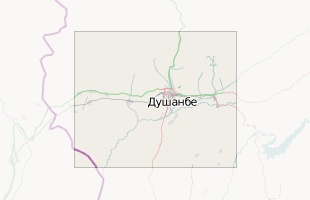
Dushanbe, Tajikistan
-

Edinburgh
-
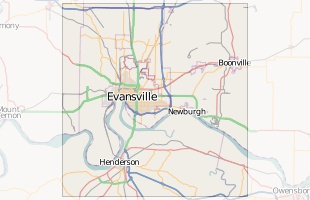
Evansville
-
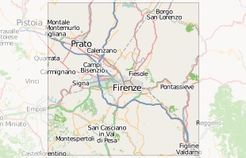
Florence
-
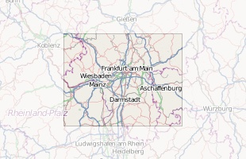
Frankfurt
-
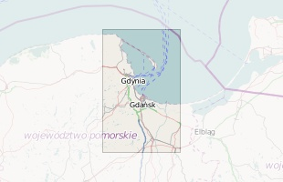
Gdansk
-
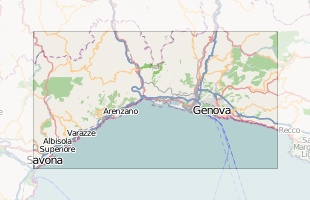
Genoa
-
Glasgow
-
Grass Valley, CA
-

Hamburg
-
Harare
-
Helsinki
-
Hong Kong
-
Honolulu
-

Houston
-
Humboldt, CA
-
Indianapolis
-
Istanbul
-

Jakarta
-
Johannesburg
-
Kabul
-
Kamloops
-
Kampala
-
Kansas City, Lawrence, Topeka
-
Karlsruhe
-
Kigali
-
Krakow
-
Kyiv
-
Lagos
-
Las Vegas
-
Leeds
-
Lexington
-
Lille
-
Lima
-
Lisbon
-
London
-
Los Angeles
-

Lyon
-
Macon, GA
-
Madison
-
Madrid
-
Manchester
-
Manila
-
Marseille
-
Melbourne
-
Mexico City
-
Miami
-
Milan
-
Milwaukee
-
Minneapolis, St. Paul
-
Mobile, AL
-
Mogadishu
-
Monaco
-
Montpellier
-
Montreal
-
Moscow
-
Mumbai
-
Munich
-
Nairobi
-
Nazareth
-
New Delhi
-
New Orleans
-
New York City
-
Newcastle upon Tyne
-
Nuremberg
-
Odessa
-
Osaka
-
Paris
-
Philadelphia
-
Phoenix
-
Pittsburgh
-
Port-au-Prince
-
Portland
-
Porto
-
Prague
-
Quito
-
Reno
-
Reykjavik
-
Rio de Janeiro
-
Riyadh
-
Rome
-
Rotterdam
-
Sacramento
-
Saint Petersburg
-
San Diego, Tijuana
-
San Francisco
-
San Francisco Bay Area
-
Santa Barbara
-
Santiago
-
Santo Domingo
-
Sao Paulo
-
Sarajevo
-
Seattle
-
Seoul
-
Shanghai
-
Siem Reap
-
Singapore
-
Sofia
-
St. Louis
-
State College, PA
-
Stockholm
-
Strasbourg
-
Sydney
-
Taipei
-
Tampa
-
Tehran
-
Tel Aviv
-
Terre Haute
-
Tokyo
-
Toronto
-
Toulouse
-
Tucson
-
Vancouver
-
Venice
-
Victoria
-
Vienna
-
Vienna, Bratislava, Győr, Eisenstadt
-
Warsaw
-
Washington D.C., Baltimore
-
Wroclaw
Coastline objects
in OpenStreetMap are not directly usable for rendering. They must first be
joined into continent-sized polygons by the
coastline error checker
and converted to shapefiles. The files available below are up-to-date,
error-corrected versions of the worldwide coastline generated using the code available from
Subversion.
The coastline usually has errors in it. These files help show where
those errors might be lurking, so that you can fix OpenStreetMap for
the next time the coastline polygons are rendered: